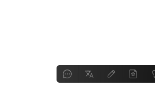

ChatBar 功能亮点
开箱即用，免费上手
无需各种技术配置
会用微信就会用ChatBar
常用助理，一应俱全
问答、翻译、写作、润色、总结、百度、小红书……
还可以自定义更多助理

划词呼起，随叫随到
微信、钉钉、邮箱、浏览器、Word、PPT……
任何软件，选中文本，即可呼起
ChatBar 帮助中心
ChatBar 有什么特色？
极简：市面上有很多优秀的 ChatGPT 桌面客户端，比如：OpenCat、Sider、ChatBox等，但它们对不大懂技术的人来说，上手多少有点难度，所以我们尝试专为办公室白领打造一款“免费上手，开箱即用”的AI助理。
高效：工作时间大量用到：Word/Excel/PPT、微信/钉钉/飞书、浏览器、邮件等软件。此时，要用AI，往往要：复制-粘贴-复制……，很低效。所以我们打造了“无处不在，随叫随到”的AI助理：任意软件，选中文本，即可自动呼起，做到极致高效。
ChatBar 会一直有免费版吗？
是的。在力所能及的情况下，我们希望能一直提供免费版，以满足普通用户的日常使用需求。
使用量比较大的用户，我们也会考虑推出VIP会员，届时您可以订购VIP，来支持我们的产品。
ChatBar 会出手机 App 吗？
有问题或建议，反馈给谁？
想推荐 ChatBar 给朋友，怎么推荐？
欢迎多多推荐！以下是推荐语，供参考：
ChatBar 这款软件很不错。电脑上任何地方，都能直接调用ChatGPT来问答、翻译、总结等，很实用！ 下载地址：https://ChatBar.AI，免费上手，开箱即用
更多问题，欢迎联系：[email protected]